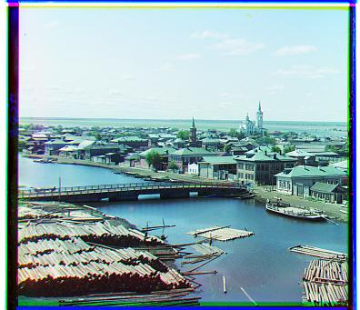

Single-scale alignment on the low-resolution images
cathedralmonastery

tobolsk
Explanation:Single-scale alignment on the low-resolution images
Firstly, we crop the picture into three equal parts, which is expected to be the three
channles.
Next, we set the first channel, which is blue, as the reference position.
Then, we shift R and B channel to every position with dx,dy larger than -15 and smaller than 15, and
check the SSD score considering the channel and Blue channel.
In the end, we record the position
with the lowest SSD score, and save the shifted and combined image.
Part 2
multi-scale pyramid alignment on all of our example images
The picture emir needs to be run with 'edge matching' in special feature, only this picture does not work here because of his clothes' special pattern.
Explanation:multi-scale pyramid alignment
At the very beginning, we downsample the image to a very low resolution, and then we perform the same.
We repeatedly downsample the image to get a 50% smaller one from the previous smallest to get
a piramid of images, anti-aliasing methiod is used at the time.
Then we to almost the same: we crop the picture into three equal parts, which is expected to be the three
channles. Next, we set the first channel, which is blue, as the reference position.
Shift R and B channel to every position with dx,dy larger than -15 and smaller than 15, and
check the SSD score considering the channel and Blue channel.
we record the best position and use it as the center for the next upper layer in the
pyramid. The range we check on each layer is covers half the range of the previous layer.
This helps us avoid being misled by a mistake made on previous layer.
In the end, we record the position with the lowest SSD score, and save the shifted and combined image.
Part 3
Algorithm on a few examples downloaded from the Prokudin-Gorskii collection.


.jpg)